Note
Hello, welcome to the SunFounder Raspberry Pi & Arduino & ESP32 Enthusiasts Community on Facebook! Dive deeper into Raspberry Pi, Arduino, and ESP32 with fellow enthusiasts.
Why Join?
Expert Support: Solve post-sale issues and technical challenges with help from our community and team.
Learn & Share: Exchange tips and tutorials to enhance your skills.
Exclusive Previews: Get early access to new product announcements and sneak peeks.
Special Discounts: Enjoy exclusive discounts on our newest products.
Festive Promotions and Giveaways: Take part in giveaways and holiday promotions.
👉 Ready to explore and create with us? Click [here] and join today!
Fun2 Flappy Parrot
In this project, we utilize an ultrasonic module to play a flappy parrot game.
After starting the script, the green bamboo (Paddle) will move from right to left at a random height. To control the parrot, place your hand above the ultrasonic module. If the distance between your hand and the module is less than 10cm, the parrot will ascend; otherwise, it will descend. You must manage this distance carefully to help the Parrot navigate past the green bamboo. Contact with the bamboo ends the game.
Below are the steps for implementing the project. It is recommended to follow these steps initially, and once familiar, you may alter the effects as desired.
1. Add Sprites
Delete the default sprite and use the Choose a Sprite button to add the Parrot sprite. Set its size to 50% and position it on the bottom left corner.
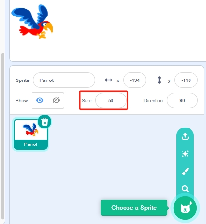
Add the Paddle sprite, set its size to 150%, rotate it to 180 degrees, and position it in the top right corner.
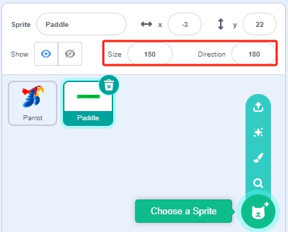
Navigate to the Costumes page of the Paddle sprite, select the Paddle on the canvas, and then click the Outline tool.
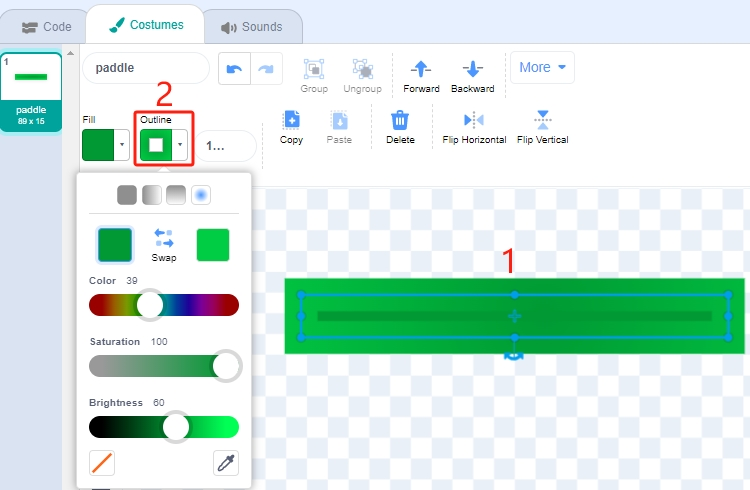
Change the outline effect to full fill mode and use the removal tool to eliminate it.
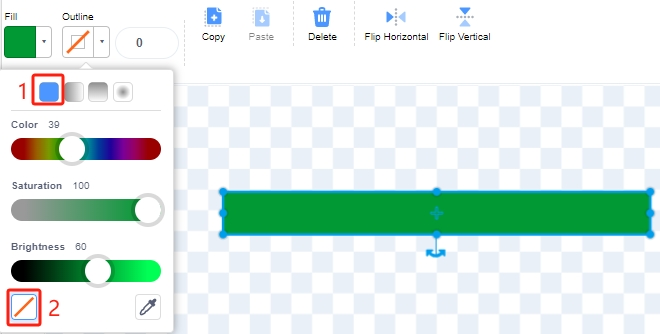
{kind=link}
{kind=link}
2. Scripting for the Parrot Sprite
Script the Parrot sprite to simulate its flight, with altitude adjustments based on the ultrasonic module’s detection distance.
When the green flag is clicked, switch the costume every 0.2 seconds to maintain the appearance of flight.
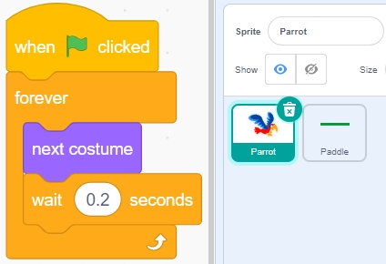
If the ultrasonic detection distance is less than 10cm, increase the y-coordinate by 50, causing the Parrot to ascend. Otherwise, decrease the y-coordinate by 40, causing the Parrot to descend.
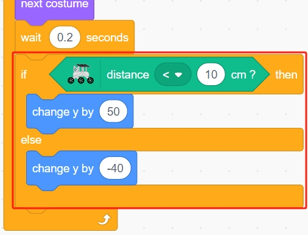
If the Parrot sprite makes contact with the Paddle sprite, the game ends, and the script ceases execution.
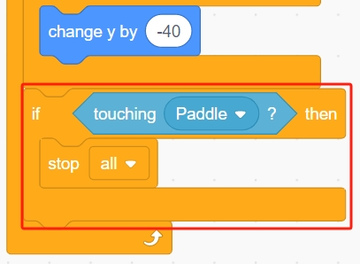
3. Scripting for the Paddle Sprite
Script the Paddle sprite to appear randomly on stage.
Hide the Paddle sprite when the green flag is clicked and simultaneously create a clone of itself. The [create clone of] block controls this cloning process.
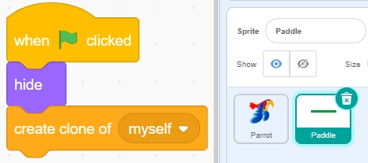
Set the clone’s position with the x-coordinate at 220 (rightmost) and the y-coordinate randomly between (-125 to 125).
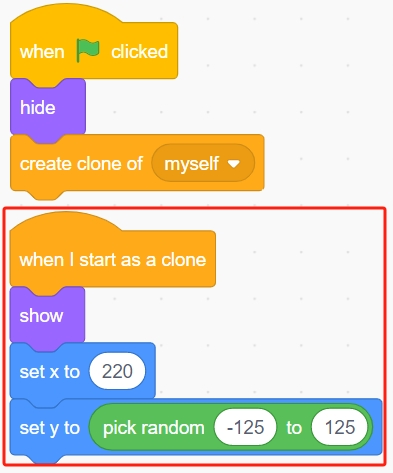
Use the [repeat] block to gradually decrease its x-coordinate, making the clone move slowly from right to left until it disappears.
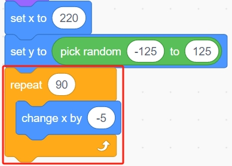
Re-clone a new Paddle sprite and delete the previous clone.
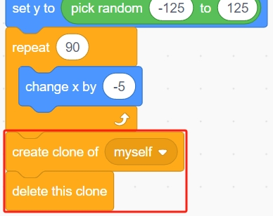
Programming is complete. You can now click the green flag to run the script and see if it achieves the desired effect.